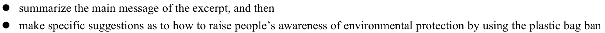
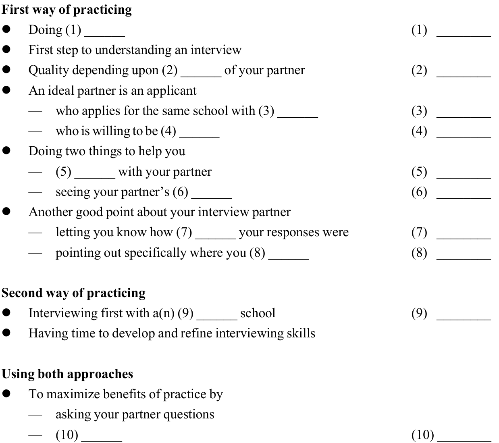

第 1 题 #
1.
点击查看答案
此题暂无可用答案。
英语专业四级 · questions · 2022
题号和章节目录由结构化数据生成。选项统一显示 A.、B.、C.、D.；原标记保留在 JSON 中。
Listen to the following passage. Altogether the passage will be read to you four times. During the first reading, which will be done at normal speed, listen and try to understand the meaning. For the second and third readings, the passage, except the first sentence, will be read sentence by sentence, or phrase by phrase, with intervals of 15 seconds. The last reading will be read at normal speed again and during this time you should check your work. You will then be given ONE minute to check your work once more.
Write on ANSWER SHEET ONE. The first sentence of the passage is already provided.
Gestures
Gestures are movements made with body parts.
In this section you will hear a talk. You will hear the talk ONCE ONLY. While listening, you may look at the task on ANSWER SHEET ONE and write NO MORE THAN THREE WORDS for each gap. Make sure what you fill in is both grammatically and semantically acceptable. You may use the blank sheet for note-taking.
You have THIRTY seconds to preview the gap-filling task.
Now listen to the talk. When it is over, you will be given TWO minutes to check your work.
In this section you will hear two conversations. At the end of each conversation, five questions will be asked about what was said. Both the conversations and the questions will be spoken ONCE ONLY. After each question there will be a ten-second pause. During the pause, you should read the four choices of A, B, C and D, and mark the best answer to each question on ANSWER SHEET TWO.
You have THIRTY seconds to preview the choices.
Now, listen to the conversations.
Questions 1 to 5 are based on Conversation One.
1.
此题暂无可用答案。
2.
此题暂无可用答案。
此题暂无可用答案。
4.
此题暂无可用答案。
5.
此题暂无可用答案。
Questions 6 to 10 are based on Conversation Two.
6.
此题暂无可用答案。
7.
此题暂无可用答案。
8.
此题暂无可用答案。
此题暂无可用答案。
此题暂无可用答案。
There are twenty sentences in this section. Beneath each sentence there are four options marked A, B, C and D. Choose the one that best completes the sentence or answers the question. Mark your answers on ANSWER SHEET TWO.
11. The smell that rose from the saucepan was so powerful that Mom shut the window lest anybody outside ______ it.
此题暂无可用答案。
12. George told the police officer that he was punched ______ by a masked man Sunday night at a restaurant.
此题暂无可用答案。
13. The printer used the highest quality paper and ink and turned out far fewer volumes than he otherwise ______.
此题暂无可用答案。
14. The unemployment rate kept rising in that decade, ______ did economic growth accompanied by rampant
commercialism and consumerism.
此题暂无可用答案。
15. In the coming years, there are about 10,000 square kilometers of the designated search area still ______ by sonar
equipment towed from ships.
此题暂无可用答案。
16. Despite their high profile and increasing athletic ability, ______ might still lag behind men in participation, events,
and medals awarded.
此题暂无可用答案。
17. Which of the following italicized phrases indicates CAUSE?
此题暂无可用答案。
18. “Perhaps you could pick up the book at my flat at some time that suited you?” The underlined verb forms are used
to indicate ______.
此题暂无可用答案。
19. “My 60 application letters procured just one interview, which I declined.” The non-restrictive relative clause in the
sentence is used to ______.
此题暂无可用答案。
20. In which of the following sentences does the preposition “beneath” carry a metaphorical sense?
此题暂无可用答案。
21. The ______ conclusion by scientists until recently had been that rising air temperatures were causing the Antarctic
Peninsula to melt.
此题暂无可用答案。
22. Ecologists have been analyzing more than 500,000 plant ______ and finding 11,676 different tree types in the
rainforest.
此题暂无可用答案。
23. Unable to continue at her job and to pay rent, Vicky and her family were ______ from their home.
此题暂无可用答案。
24. The archaeological dig is almost without ______ the most revelatory of its kind, it has begun to transform our
knowledge of life in the Bronze Age.
此题暂无可用答案。
25. Both official and unofficial records indicate that the war ______ over 6 million people, resulting in
the creation of the largest refugee population worldwide today.
此题暂无可用答案。
26. Few are spared from suffering in The Kite Runner, and the author ______ from offering a simplistic happy ending.
此题暂无可用答案。
27. Through the story of two boys, this haunting and ______ tale demonstrates the importance of preserving our
humanity at all costs.
此题暂无可用答案。
28. The editor of Merriam-Webster pointed out that there are many reasons to look up a word in the dictionary ______
than learning its meaning.
此题暂无可用答案。
29. Ten soldiers were ambushed and ______ injured after the gunmen attacked the camp late at night.
此题暂无可用答案。
30. Although Gutenburg developed his printing press with a limited use in mind, the cultural effects of mass printing
have been ______.
此题暂无可用答案。
Decide which of the words given in the box below would best complete the passage if inserted in the corresponding blank. The words can be used ONCE ONLY. Mark the letter for each word on ANSWER SHEET TWO.
Reality is always a mutually agreed-upon social construct, a more or less common consensus about what is out there and what it all means to most people. Our shared ideas of truth, beauty, morality, politics, and the (31) ______ we interpret the world and make decisions on how we act in it are determined by a complex process of education, (32) ______, acculturation, and assent that begins at birth. It is a cliché that human beings are out of touch with nature, and that more than a few of us are out of touch with reality. The fact is, (33) ______ when we are in touch, it’s not with some given natural world or some (34) ______ existing reality. Being in touch with nature means acting (35) ______ learned response to the natural world. As a matter of fact, responding with awe in the (36) ______ of natural beauty dates back only to the eighteenth century and became a major cultural event only in the nineteenth century. Before the late seventeenth century, people in Western Europe did not pay much attention to nature’s grandeur. A mountain range was something in the way. A complex shift in sociological and (37) ______ responses occurred in the early eighteenth century and can be traced in its development through travel literature and then in poetry, fiction, and philosophy. By the mid-eighteenth century, wild, mountainous landscapes became the site of grand, (38) ______ emotional response. The mountains had not, themselves, changed; cultural response had. The “Sublime”, the effect of (39) ______ transported before nature’s wildness and in front of representations of that wildness in painting and poetry, was born. With it came nineteenth-century romanticism and attitudes toward the natural world that (40) ______ remain with us. Reality is not an objective, geophysical phenomenon like a mountain. Reality is always something said or understood about the world.
In this section there are three passages followed by ten multiple choice questions. For each multiple choice question, there are four suggested answers marked A, B, C and D. Choose the one that you think is the best answer and mark your answers on ANSWER SHEET TWO.
(1) We didn’t always live on Mango Street. Before that we lived on Loomis on the third floor, and before that we lived on Keeler. Before Keeler it was Paulina, and before that I can’t remember. But what I remember most is moving a lot. Each time it seemed there’d be one more of us. By the time we got to Mango Street we were six-Mama, Papa, Carlos, Kiki, my sister Nenny and me.
(2) The house on Mango Street is ours, and we don’t have to pay rent to anybody, or share the yard with the people downstairs, or be careful not to make too much noise, and there isn’t a landlord banging on the ceiling with a broom. But even so, it’s not the house we’d thought we’d get.
(3) We had to leave the flat on Loomis quick. The water pipes broke and the landlord wouldn’t fix them because the house was too old. We had to leave fast. We were using the washroom next door and carrying water over in empty milk gallons. That’s why Mama and Papa looked for a house, and that’s why we moved into the house on Mango Street, far away, on the other side of town.
(4) They always told us that one day we would move into a house, a real house that would be ours for always so we wouldn’t have to move each year. And our house would have running water and pipes that worked. And inside it would have real stairs, not hallway stairs, but stairs inside like the houses on TV. And we’d have a basement and at least three washrooms so when we took a bath we wouldn’t have to tell everybody. Our house would be white with trees around it, a great big yard and grass growing without a fence. This was the house Papa talked about when he held a lottery ticket and this was the house Mama dreamed up in the stories she told us before we went to bed.
(5) But the house on Mango Street is not the way they told it at all. It’s small and red with tight steps in front and windows so small you’d think they were holding their breath. Bricks are crumbling in places, and the front door is so swollen you have to push hard to get in. There is no front yard, only four little elms the city planted by the curb. Our back is a small garage for the car we don’t own yet and a small yard that looks smaller between the two buildings on either side. There are stairs in our house, but they’re ordinary hallway stairs, and the house has only one washroom. Everybody has to share a bedroom-Mama and Papa, Carlos and Kiki, me and Nenny.
(6) Once when we were living on Loomis, a nun from my school passed by and saw me playing out front. The laundromat downstairs had been boarded up because it had been robbed two days before and the owner had painted on the wood YES WE’RE OPEN so as not to lose business.
(7) Where do you live? She asked.
(8) There, I said pointing up to the third floor.
(9) You live there?
(10) There. I had to look to where she pointed-the third floor, the paint peeling, wooden bars Papa had nailed on the windows so we wouldn’t fall out. You live there? The way she said it made me feel like nothing. There. I lived there. I nodded.
(11) I knew then I had to have a house. A real house. One I could point to. But this isn’t it. The house on Mango Street isn’t it. For the time being, Mama says. Temporary, says Papa. But I know how those things go.
41. The size of the family ______ each time they moved house.
此题暂无可用答案。
42. Which of the following does NOT fit the description of the family’s dream house (Para.4)?
此题暂无可用答案。
43. The narrator’s dream house and the house on Mango Street are compared in the following details EXCEPT ______.
此题暂无可用答案。
(1) Thanksgiving may be an official day of gratitude in the U.S., but research suggests that if you make time for “thank you” every day, you might enjoy life more.
(2) Many people may think of gratitude as a “passive” gesture-you wait for something good, then feel grateful, said David DeSteno, a professor of psychology at Northeastern University. DeSteno studies the effects that thankfulness can have on people’s behavior.
(3) But a growing body of research is suggesting the opposite is true, according to DeSteno. By choosing to feel gratitude, people can make positive changes in their lives. “Gratitude isn’t passive reflection. It’s active,” DeSteno said. “And it’s not about the past. It’s there to help direct our behavior in the future.”
(4) In experiments where he and his colleagues set people up to feel grateful, they found that thankfulness appeared to spur participants to act in more cooperative, less selfish ways. In one study, for example, people came to the lab to complete a computer task. At some point, certain participants’ computers were rigged to “crash”. Luckily, a kind stranger who had just completed the same task (and was actually part of the research team) offered help and got the computer running again. Afterward, all of the study participants played a standard economic game where people have the opportunity to either act strictly in their own self-interest or in a more cooperative way.
(5) In general, DeSteno’s team found, the study participants who had gotten help from a stranger during that first test were more likely to be cooperative during the next test. (A survey all of the participants took confirmed that those who’d received help were, in fact, feeling more grateful than their counterparts who’d had smooth sailing.) That’s one of a number of studies, DeSteno said, that suggest that gratitude helps guide behavior. It can encourage you to get more exercises, or to be more helpful to others (and not just that person you feel you “owe”).
(6) Some research has also found links between gratitude and better health, such as lower blood pressure and just feeling physically better. However, it’s not clear whether gratitude directly affects physical well-being.
(7) At the University of California, Professor Naomi Eisenberger and her colleagues hope to zero in a bit more on the effects of gratitude. For six weeks, some study participants will spend time writing about things for which they are grateful. The rest will write about positive subjects, but won’t focus on gratitude.
(8) According to Eisenberger, gratitude, based on studies like DeSteno’s, seems to enhance people’s ability to care for others. And in animals, Eisenberger noted, caregiving is linked to lesser reactivity in the face of a threat-mothers may feel less scared for themselves when a predator comes, and protect their babies instead.
(9) Whatever the biological effects, plenty of research suggests that gratitude can change how you feel-even about those people who’ve been in your life for years, according to Sara Algoe, an assistant professor of psychology at the University of North Carolina.
(10) Her research has focused on the effects of gratitude in romantic relationships. In one study of 77 couples who’d been together for an average of four years, Algoe’s team had each partner think of something the other had done for them recently-no matter how small-and then thank him or her. Before that task, the couples completed a survey on their satisfaction with their relationship. Then they did it again six months later.
(11) In general, the study saw a shift in people who felt their partner really meant that “thank you”- thinking, for example, that “my partner saw the ‘real’ me.” Those men and women typically felt more satisfied with their relationship six months later. The findings, according to Algoe, highlight the importance of saying “thank you” even for those mundane things, from those people you see every day.
(12) “Expressing gratitude well is a potent part of relationship satisfaction,” Algoe said. “Sometimes we feel grateful, but we don’t say it. This research suggests it’s important to say it. And if someone offers you help, try accepting it instead of shunning it. See it as a gift.”
44. Which of the following statements about gratitude does Professor DeSteno most likely agree?
此题暂无可用答案。
45.Which of the following is NOT mentioned as a potential benefit of gratitude?
此题暂无可用答案。
46. According to the passage, one similarity between DeSteno’s and Algoe’s research lies in ______.
此题暂无可用答案。
47.What is the main topic of the passage?
此题暂无可用答案。
(1) As words fall in and out of fashion, new ones enter the language. But some, such as autonaut, chassimover and pupamotor failed to reach the assembly line.
(2) English is a marvelous mashup of words. A few Celtic place names. A stock of Old English words (day and night, black and white, food and drink). More than twice as many words adopted from Norman French (marriage, parliament). Sometimes competing words from both: motherhood (Old English) and maternity (Norman French). Words of Greek derivation, like octopus. Words of Latin derivation, such as campus and ultimatum. Words from all over the place: Welsh (corgi), Irish (brogues), Arabic (algebra), German (hamster), Chinese (typhoon), Japanese (tycoon), American Indian (tobacco), and many more.
(3) Wherever they come from, words fall in and out of fashion. Within living memory some words have changed meanings completely, while bad and wicked changed, then changed back. Yesterday’s slang is respectable today. In the 1950s and 60s, words that angered people who write to newspapers included job (the writer thought it vulgar, and preferred employment), and breakdown (“horrible jargon”). The Manchester Guardian stylebook of 1950 banned such “slang” phrases as bank on, face up to, give away, sack (for “dismiss”) and many others.
(4) The expression “foregone conclusion” once meant an experience previously undergone, rather than making a decision without listening to the arguments. Many words we use today have a different meaning from 20,never mind 50,100 or 200 years ago. The word “nice”once meant silly (silly meant happy or blessed),then subtle, then pleasant. You could be sad with food and drink-it meant full to the brim, and was related to satisfied and saturated. It then came to mean solid, so a reliable person could be called sad; in time, solid, heavy and dull came to mean sad in one of our modern uses. In recent years it subtly acquired an additional meaning, as in “how sad is that?”
(5) About 1,700 words are first recorded in Shakespeare (which does not necessarily mean he invented them), including barefaced, fancy-free, laughable and submerged. Milton is credited with the expression “all ears”. Jung invented the word synchronicity as well as ambivalent, extrovert and introvert, while Freud came up with the word psychoanalysis, which is derived from the Greek for butterfly, psyche, who was also the Greek goddess of the soul.
(6) There is another continual source of new words. The man who developed Bluetooth in 1996 was reading a historical novel about Harald Bluetooth, a 10th-century King of Denmark, at the time and appropriated his name. Spam, in the sense of unwanted emails, was named after the 1970 Monty Python cafe sketch in which Spam, in the sense of unwanted canned meat, was compulsory in every dish. Sometimes new words catch on, sometimes they don’t, but you can always bet that someone, somewhere will object to them. I recall readers complaining about the Guardian’s use of the new word blog (an abbreviation of another new word, weblog) but within a very short time it had become established. In the early 1960s, the Automobile Association sought suggestions from the public for a new word to describe drivers: submissions included autocarist, autonaut, chassimover, motorman, wheelist, and the bizarre acronym pupamotor (“person using power-assisted means of travelling on roads”). The idea was dropped. Whoever came up with laser (“light amplification by stimulated emission of radiation”) in 1960 was more successful.
(7) The writer A. P. Herbert devised a scoring system for new words, which would be given marks out of 10 on each of four criteria: is it readily understood, is it to be admired, is it sound etymologically, and is it actually required? The pass mark was 50%and television, for example, just scraped through (scoring respectively 10, 0, 0, and 10). One of my favorite recent words is bouncebackability, a neat alternative to “the ability to bounce back” attributed to the former football manager Iain Dowie. I fear it would fail the test.
48. What does the word mashup (Para.2) mean according to the context?
此题暂无可用答案。
49.What is the shared theme of Paras.3 and 4?
此题暂无可用答案。
50. From Paras.5 and 6, we know that words were coined in the following areas EXCEPT ______.
本页部分文字层异常，已保留原图文字区域；这些区域随窗口缩放，暂不能重新换行或复制。
此题暂无可用答案。
In this section there are five short answer questions based on the passages in Section A. Answer the questions with NO MORE THAN TEN WORDS in the space provided on ANSWER SHEET TWO.
51. What can be inferred about the narrator’s flat on Loomis (Para.3)?
此题暂无可用答案。
52. What does the narrator mean by “I know how those things go” (Para.11)?
此题暂无可用答案。
53. Whom does the word “counterparts” (Para.5) refer to?
此题暂无可用答案。
54. What does “failed to reach the assembly line” (Para.1) mean?
此题暂无可用答案。
55. What is the author’s tone in the last sentence of the passage?
此题暂无可用答案。
Read carefully the following excerpt of a news report, and then write your response in NO LESS THAN 200 WORDS, in which you should:

as an example.
You can support yourself with information from the excerpt.
Marks will be awarded for content relevance, content sufficiency, organization and language quality. Failure to follow the above instructions may result in a loss of marks.
Write your response on ANSWER SHEET THREE.
Now the trend towards banning plastic shopping bags comes in the wake of new findings regarding the extent and harm of plastic in our environment. Since plastic isn’t biodegradable, it ends up either in landfills or as litter on the landscape and in waterways and the ocean. Plastic can take hundreds of years to decompose and release toxins into the soil and water in the process.
Littered plastic is also a huge problem for the health of wildlife, as many animals ingest it thinking it is food and can have problems thereafter breathing and digesting. The non-profit Worldwatch Institute reports that at least 267 species of marine wildlife are known to have suffered from entanglement or ingestion of marine debris, most of which is composed of plastic. A recent study on the impact of litter on North Sea wildlife has found that some 90 percent of the birds examined had plastic in their stomachs.
Another reason for banning plastic bags is their burden on fossil fuel. Plastic is not only made from petroleum: producing it typically requires a lot of fossil-fuel-derived energy. The fact that the use of milions, or even billions of plastic grocery bags each year means we are drilling for or are importing millions of barrels worth of oil and natural gas for a convenient way to carry home a few groceries
Environmental groups have continued to push for more plastic bag bans. They argue that using fossil fuel to make something so short-lived, which can blow away at the slightest breeze and pollutes indefinitely, is illogical, particularly when there is a ready alternative: the reusable bag.
本页部分文字层异常，已保留原图文字区域；这些区域随窗口缩放，暂不能重新换行或复制。
Preparing for College Interviews

说明：本次考试全国出现了两套试题，其中LANGUAGE USAGE的部分试题和CLOZE的试题不同，现将其补充如下：
There are twenty sentences in this section. Beneath each sentence there are four options marked A, B, C and D. Choose the one that best completes the sentence or answers the question. Mark your answers on ANSWER SHEET TWO.
11. ______ you ______ further problems with your computer, contact your dealer for advice.
此题暂无可用答案。
14. Unfortunately, she was ______ to tell the truth even to her closest friend.
此题暂无可用答案。
16. It is not ______ much the language as the cultural background that makes the book difficult to understand.
此题暂无可用答案。
19.Which of the following exclamations is INCORRECT?
此题暂无可用答案。
22.The multinational corporation has made a take-over ______ for a local property company.
此题暂无可用答案。
27.When young, Paul earned his living by ______ works of art in the museum.
此题暂无可用答案。
29.The job of a student accommodation officer ______ a great many visits to landladies.
此题暂无可用答案。
Decide which of the words given in the box below would best complete the passage if inserted in the corresponding blank. The words can be used ONCE ONLY. Mark the letter for each word on ANSWER SHEET TWO.
Why has the McDonald’s model proven so irresistible? Eating fast food at McDonald’s has certainly become a “sign” that, among other things, one is in tune with the contemporary lifestyle. There’s also a kind of magic or (31) ______ associated with such food and their settings. However, what will be focused on here are the four alluring dimensions that lie at the (32) ______ of the success of this model. In (33) ______, McDonald’s has succeeded because it offers consumers, workers, and managers efficiency, calculability, predictability and control.
One important element of McDonald’s success is efficiency, or the optimum (34) ______ for getting from one point to another. For consumers, McDonald’s offers the best available way to get from being hungry to being full. In a society where both parents are likely to work or where a single parent is (35) ______ to raise children on her own, efficiently satisfying hunger is very attractive.
Calculability is an emphasis on the quantitative aspects of products sold (portion size, cost) and services offered (the time it takes to get the product). In McDonaldized systems, quantity has become equivalent to quality; a lot of something, or the quick (36) ______ of it, means it must be good.
McDonald’s also offers predictability, the (37) ______ that products and services will be the same over time and in all locales. The Egg McMuffin in New York will be (38) ______ to those in Chicago and Los Angeles. Also, those eaten next week or next year will be the same as those eaten today.
The fourth element in McDonald’s success, control, is (39) ______ over people who enter the world of McDonald’s. Lines, limited menus, (40) ______ options all lead diners to do what management wishes them to do — eat quickly and leave.